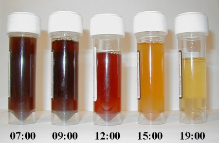

WELCOME TO M BIOLOGY.COM

|
 From specimen collection Most causes of In vitro hemolysis are related to specimen collection. Difficult collections, unsecure line connections, contamination, and incorrect needle size, as well as improper tube mixing and incorrectly filled tubes are all frequent causes of hemolysis. Excessive suction can cause the red blood cells to be literally smashed on their way through the hypodermic needle owing to turbulence and physical forces. Such hemolysis is more likely to occur when a patient's veins are difficult to find or when they collapse when blood is removed by a syringe or a modern vacuum tube. Experience and proper technique are key for any phlebotomist or nurse to prevent hemolysis. In vitro hemolysis during specimen collection can cause inaccurate laboratory test results by contaminating the surrounding plasma with the contents of hemolyzed red blood cells. For example, the concentration of potassium inside red blood cells is much higher than in the plasma and so an elevated potassium level is usually found in biochemistry tests of hemolyzed blood. In vitro hemolysis can also occur in a blood sample because of prolonged storage or storage in incorrect conditions (i.e., too hot or too cold). [edit]From mechanical blood processing during surgery In some surgical procedures (especially some heart operations) where substantial blood loss is expected, machinery is used for intraoperative blood salvage. A centrifuge process takes blood from the patient, washes the red blood cells with normal saline, and returns them to the patient's blood circulation. Hemolysis may occur if the centrifuge rotates too quickly (generally greater than 500 rpm)—essentially this is hemolysis occurring outside of the body. Unfortunately, increased hemolysis occurs with massive amounts of sudden blood loss, because the process of returning a patient's cells must be done at a correspondingly higher speed to prevent hypotension, pH imbalance, and a number of other hemodynamic and blood level factors. [edit]From bacteria culture Main article: Hemolysis (microbiology) Hemolysis from streptococcus. Examples of the blood culture patterns created by (from left) alpha-, beta- and gamma-hemolytic streptococci. Visualizing the physical appearance of hemolysis in cultured blood samples may be used as a tool to determine the species of various Gram-positive bacteria infections (e.g., Streptococcus). |